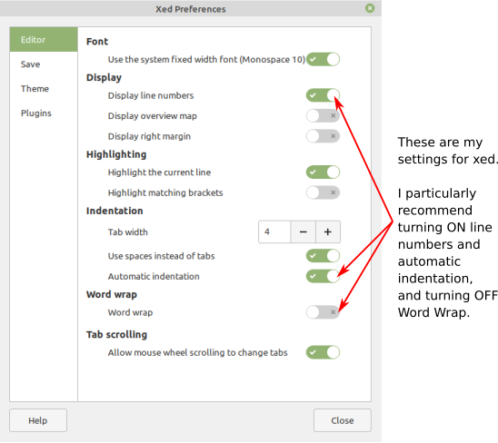
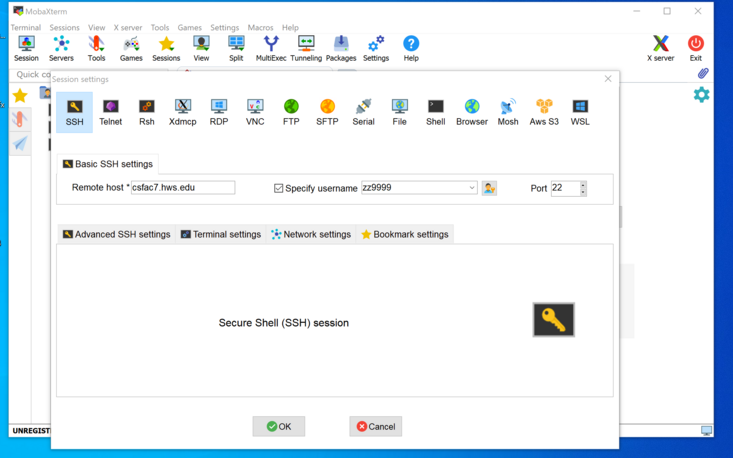
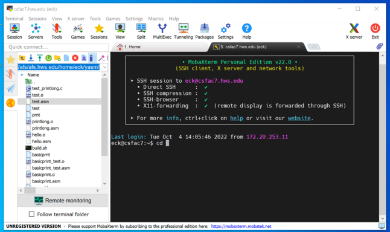
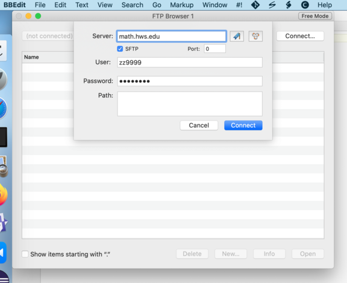

Using Linux for yasm and ddd
For the first half of CPSC 220, you have been able to work on your own computer, as long as you had Java installed. However, the programs that we will be using for x86-64 programming must be run on Linux. It is still possible to use a Windows or Mac computer, but to do that, you will have to connect to one of our Linux computers. This page has some information about working on Linux either directly or through a network connection.
In any case, you will need to do some work on the Linux command line. You should at least be familiar with the cd, ls, cp, and mkdir commands. If you are not familiar with them, see the basic command line info on my About Linux site.
Remember, of course, that you always have the option of working directly on a Linux computer in Rosenberg 009 or Lansing 310.
Working Directly on Linux
You can log onto a Linux computer in Rosenberg 009 or Lansing 310. In that case, you will be using a Linux GUI, and you can access files through a file browser. You can use the file browser to create directories and view their content. A nice trick on our version of Linux is to right-click a directory and select "Open in Terminal" from the popup menu; this will open a Terminal with that directory set as the working directory.
Double-clicking a text file, such as an assembly language (.asm) file, will open it in the default file editor, xed. That editor is good enought for our purposes, but you will certainly want to change some of the preferences to make it more suitable for programming. In any xed window, select the "Preferences" command from the "Edit" menu. Consider changing the settings in the "Editor" section as follows:

Working from Windows
To use yasm or ddd from Windows, you will have to log on to one of our Linux computers remotely. Those programs are not installed on math.hws.edu, so you need to use one of our lab computers. (If you are trying to connect from off campus, you will need to use the VPN to connect to the campus network first.) It is recommended to use one of the eight computers csfac0.hws.edu, csfac1.hws.edu, ..., csfac7.hws.edu. The twelve computers in Lansing 310 might also be available, but they are more likely to be turned off; they are cslab0.hws.edu, cslab1.hws.edu, ..., csfac11.hws.edu.
You can use ssh to connect to any of these machines, and you will be able to use command-line programs such as yasm and gdb. However, you will not be able to use the GUI debugger, ddd. Now, ddd is just a GUI front-end for gdb, so gdb might be good enough for you. But if you want to use ddd, you will need a different way to connect. You might try MobaXTerm, a Windows program for remote access. Although it is a commercial program, a free "Home Edition" is available for personal use. I suggest downloading the Portable Edition from this page:
You will get a .zip file that contains an .exe file. You can simply double-click the .exe file to run the program. You want to open an ssh session in MobaXTerm. In the main window, click the "Session" button. And in the "Session Settings" popup window, click "ssh". It will look like this:

You just need to fill in the "Remote host" box with the name of the Linux computer that you want to connect to, and fill in "Specify username" with your Linux username. Click "OK". You will have to enter your Linux password. If everything is working, you will get a command-line interface to your Linux account. There will also be a file browser that shows the files on the Linux system. It will look something like this:

MobaXTerm has a built-in file editor that you can use to edit the files in your Linux account. For a text file, such as an assembly language (.asm) file, you can just double-click the file name in the file browser (or if that doesn't work, right-click and select Open in Default Editor).
Working from MacOS
To use yasm or ddd from a Mac, you will have to log on to one of our Linux computers remotely. Those programs are not installed on math.hws.edu, so you need to use one of our lab computers. (If you are trying to connect from off campus, you will need to use the VPN to connect to the campus network first.) It is recommended to use one of the eight computers csfac0.hws.edu, csfac1.hws.edu, ..., csfac7.hws.edu. The twelve computers in Lansing 310 might also be available, but they are more likely to be turned off; they are cslab0.hws.edu, cslab1.hws.edu, ..., csfac11.hws.edu.
You can use ssh to connect to any of these machines, and you will be able to use command-line programs such as yasm and gdb. However, you will not be able to use the GUI debugger, ddd. Now, ddd is just a GUI front-end for gdb, so gdb might be good enough for you. However, if you want to use a GUI, you will need to install some extra software.
First of all, to use your Mac for editing text files, such as assembly language (.asm) files, in your Linux account, I recommend using a Mac program that supports opening and saving files using the sftp protocol. This lets you edit a file from Linux without copying it to and from your computer. Many editor programs have this ability. I like BBEdit, which you can use for free. You can download it by clicking the "Free Download" button on this page:
You will get a .dmg file that contains the BBEdit application.
To open a file from Linux using sftp, just use the "Open from SFTP Server" command in the BBEdit "File" menu. A popup window will allow you to connect to a remote computer:

Fill in the "Server" box with the name of any of our Linux computers; math.hws.edu will work here. Make sure that "SFTP" is checked. Use your Linux user name and password.
Once connected, you will be able to use the window to browse for the file that you want to open. When you open a file, it will be copied to a temporary file on your computer, but when you save it, any changes will be copied back to the original Linux file.
This is nice, but it still doesn't allow you to use use a Linux GUI program like ddd. For that, you need to install support on your Mac for the "X11" protocol, which is used to run Unix GUI programs. A common Mac software for doing that is called XQuartz. It can be downloaded here:
Download the XQuartz .dmg file. it contains a package that you will have to install.
With XQuartz installed, you will be able to use "ssh -X" to connect to a Linux computer and run GUI programs. That is, connect to one of the Linux lab computers with a command of the following form (with "zz9999" replaced by your own user name):
ssh -X zz9999@csfac4.hws.edu
When you connect, the XQuartz program will start automatically. When you run ddd on the Linux command line, the ddd window will open on your Mac.
Even with XQuartz installed, you might find that ssh -X doesn't work. It will probably work, with a warning, to use ssh -Y instead. A Google search informed me that to avoid the warning and use ssh -X, I should add the line XAuthLocation /opt/X11/bin/xauth to the file named config in the .ssh directory. One way to do that is with the following command, working in your home directory:
echo "XAuthLocation /opt/X11/bin/xauth" >> .ssh/config